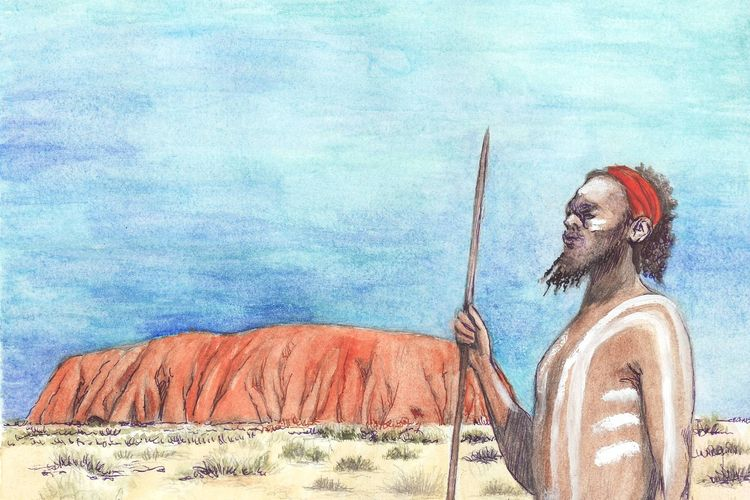

65.000+ TAHUN LALUEra Pribumi & Tradisi Kartografi Dreamtime
Sebelum gelombang migrasi global, daratan benua ini dijaga oleh suku Aborigin dan Penduduk Kepulauan Selat Torres. Mereka merajut ikatan spiritual tak terpisahkan melalui kisah mitologi penciptaan bumi purba.
MULAI 1788
Era Kolonisasi, Arsitektur, & Fusi Modern
Berlabuhnya Armada Pertama (First Fleet) di bawah bendera Britania Raya memicu fusi budaya baru. Relik pemukiman narapidana berasimilasi membentuk fondasi masyarakat multikultural modern Australia hari ini.
Artefak & Simbol Budaya
Daftar elemen kebudayaan material yang dirender secara dinamis melalui JavaScript looping.